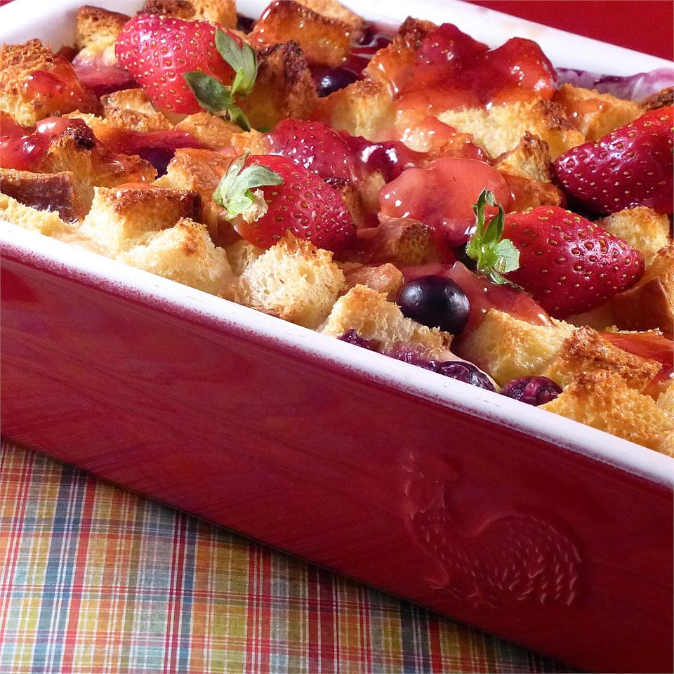

Strawberry Cream Cheese French Toast
French toast casserole is served with a drizzle of warm homemade strawberry sauce.

Ingredients
- 12 slices home-style white bread, cut into 1-inch cubes, divided
- 2 (8 ounce) packages cold cream cheese, cut into 1-inch cubes
- 1½ cups sliced fresh strawberries
- 2 cups half-and-half
- 12 large eggs
- ⅓ cup pure maple syrup
sauce:
- 1 cup white sugar
- 1 cup water
- 2 tablespoons cornstarch
- 1 cup sliced fresh strawberries
- 1 tablespoon butter
Step by Step
- Generously grease a 9x13-inch baking dish.
- Arrange half the bread cubes in the prepared baking dish. Evenly distribute cream cheese cubes over the bread cube layer; sprinkle 1 1/2 cups sliced strawberries atop cream cheese layer. Layer the remaining bread cubes over strawberry layer.
- Pour half-and-half into a blender; pulse for a few seconds. Blend eggs into half-and-half until fully incorporated. Add maple syrup and blend until smooth. Pour mixture evenly over bread mixture. Cover the baking dish with aluminum foil and refrigerate 8 hours or overnight.
- Remove baking dish from refrigerator 45 minutes before baking.
- Preheat oven to 350 degrees F (175 degrees C).
- Bake the covered casserole in the preheated oven for 30 minutes. Remove aluminum foil and continue baking until French toast is puffed and golden brown, about 30 more minutes
- Stir sugar, water, and cornstarch together in a small saucepan. Cook, stirring occasionally, over medium heat until mixture has thickened, about 5 minutes. Mix in 1 cup sliced strawberries; cook and stir until strawberries have softened, about 10 minutes. Add butter; stir until melted. Serve hot over French toast.